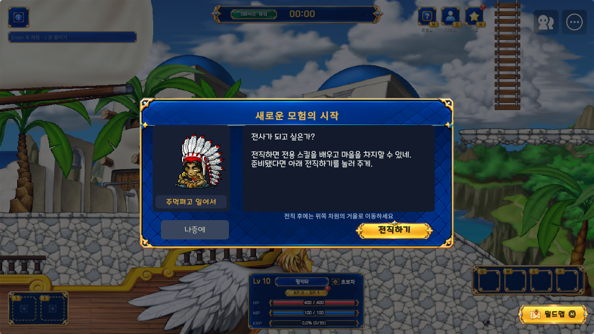
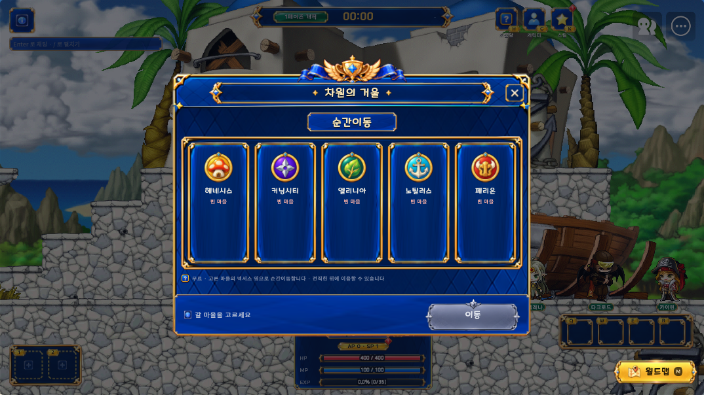
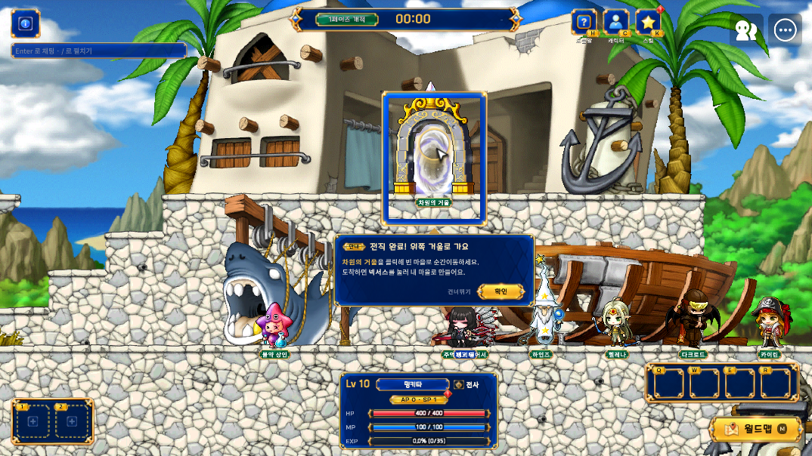
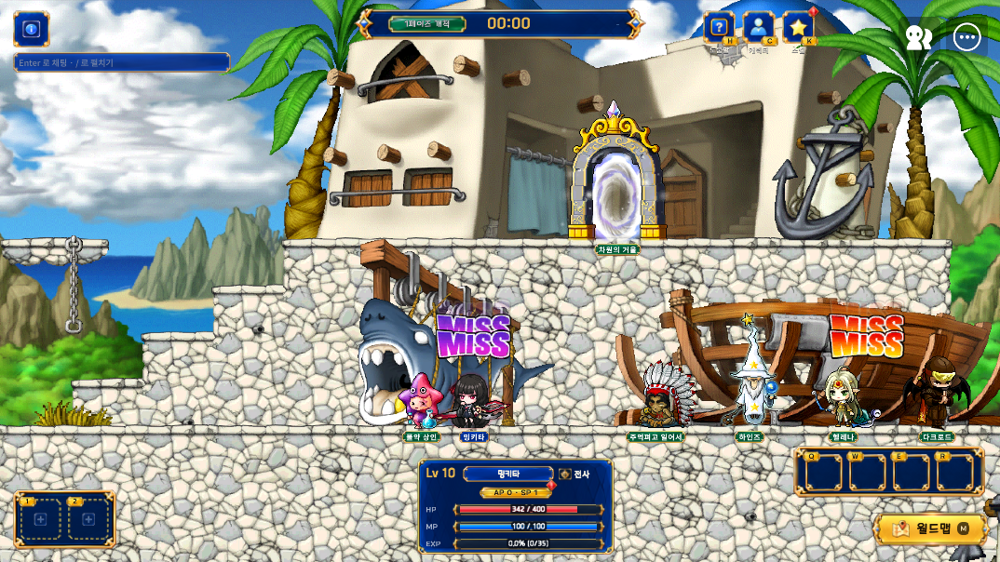

PR #193 · 수정 및 Maker 검증
2026-10-06 · a/miss-color-monster · Draft 유지
검증 결과
- MISS: 실제 달팽이에는 빨강, 플레이어에는 보라. 실제 ShowMiss 표시 경로를 반복 호출해 두 색을 같은 화면에서 확인.
- 차원 관문 부족: 지역재화 0/25·코어 1 → 이동 없음, 코어 1 유지. 서버 로그
consumed=0.
- 차원 관문 성공: 지역재화 25·코어 1 → Henesys_Boss_Mushmom 도착, 지역재화 0·코어 0.
- 발록: Maker 카탈로그 maxHp=45600, attackPower=252(각각 20% 증가).
- 꿈의 조각: 보스 10회·엘리트 12회 보상 함수 호출에서 0.6 기준 드롭/미드롭 모두 확인. 기존 수량과 다른 보상 유지. 장기 확률을 실측한 대규모 표본 테스트는 아님.
- 첫 전직: 실제 RequestChooseJob 성공 → JobChangedEvent → 거울 안내. 거울 표시가 화면을 가리지 않으며 UI를 열면 종료.
- 차원의 거울: 제목과 순간이동 글꼴·크기·스타일 동일. 순간이동은 Center/Middle, 제목은 좌우 장식(-100,+100)의 중점(0)에 배치.
- mLua 수정 파일 진단·UIBuilder 검증·UTF-8/한글 손상 검사 통과. 데이터 무결성 검사 통과(기존 NPC 경고 3건). Maker 빌드 오류 0, 기존 경고 16건.
기존 Play 제한: MatchSessionLogic.TickPendingStart의 [Match] handoff 없음 — 30.0초 안에 인계 레코드를 못 읽음 room=TestPlayInstance 1건. 이번 수정 경로의 실행 오류는 없었으며 정식 로비→매치 인계 전체 테스트와 실제 보스 처치 시나리오의 끝까지 실행은 별도.
테스트는 로컬 Maker Play에서 진행. 일시적 레벨·재화·보상 함수 입력을 사용했으며 계정 저장소 초기화나 배포는 하지 않았다. 관련 없는 기존 UI/맵 수정은 추가 커밋에서 제외.
전직 NPC UI
기존 리소스를 UIBuilder로 재사용. 초상·이름·본문·전직 버튼과 오른쪽 아래 안내 문구.

차원의 거울 글꼴·중앙 배치

첫 전직 후 실제 거울 표시

MISS 색 구분
왼쪽 플레이어는 보라, 오른쪽 달팽이는 빨강.

Draft PR #193